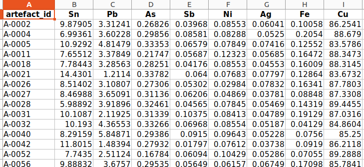
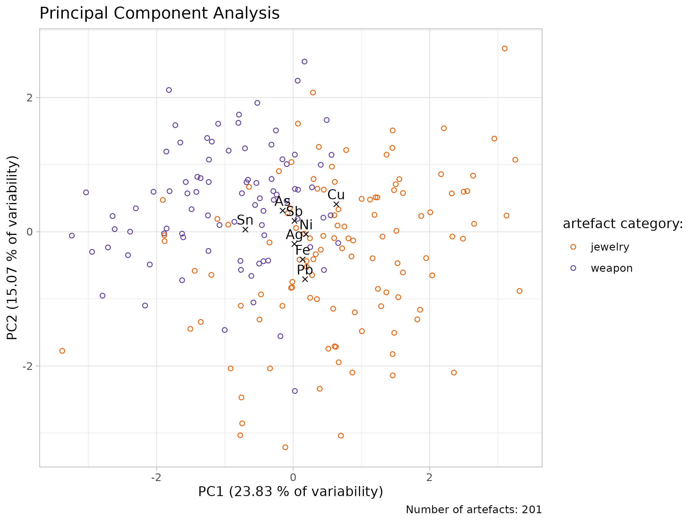
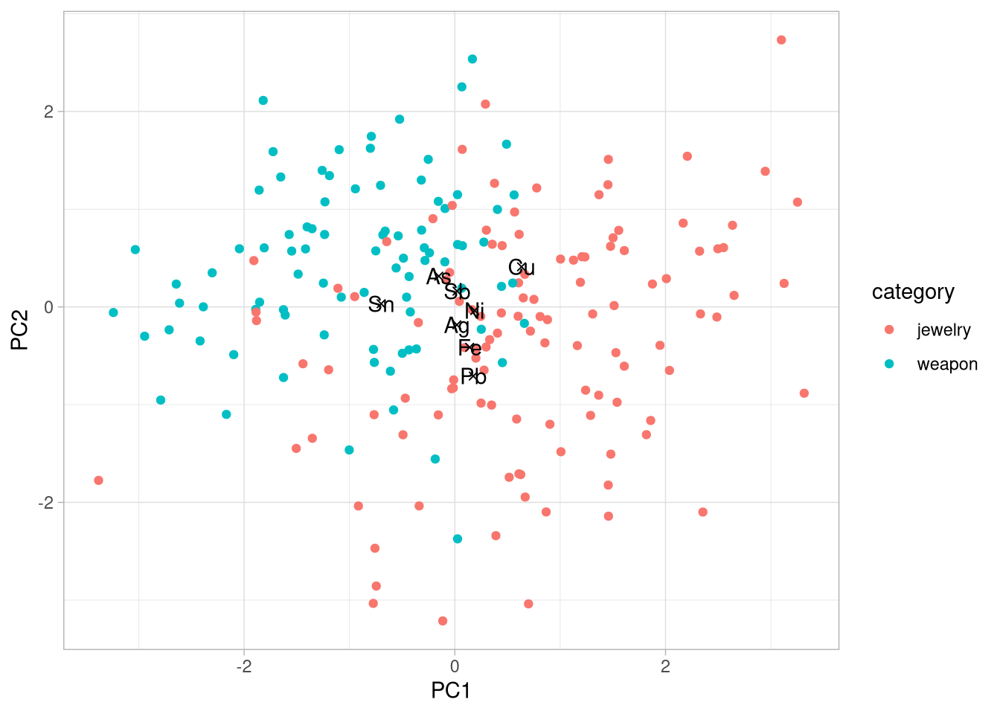
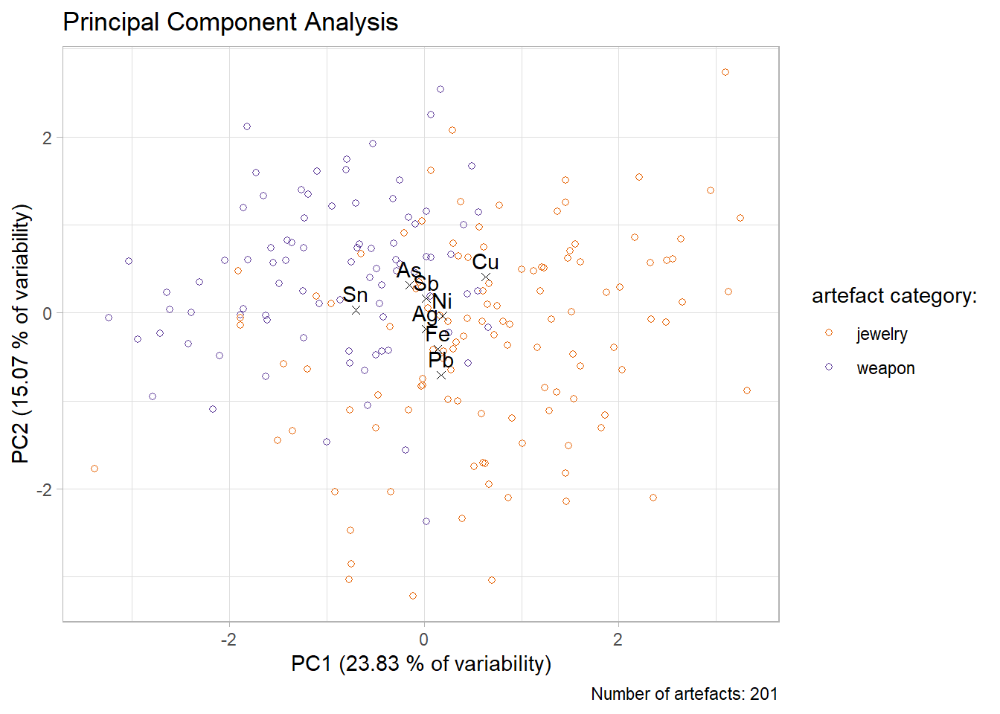

rm(list = ls())
library(here)
library(dplyr)
library(ggplot2)Exercise
Warm up
- what is bronze made of?
- how can we study element composition of the bronze artefacts?
- why might the composition of elements differ between artefact types, or even within the same type?
Problem
In this exercise, we will revisit to the fabricated Bronze Age cemetery from the exercise in Week 3. The lab has sent you the results of the elemental composition analysis of bronze artefacts from this cemetery. The results are in an Excel spreadsheet.
Your task is to import these results into R, perform PCA and visualise the results using the ggplot() function, and determine whether the composition of bronze weapons differs from that of bronze jewellery and clothing components.

Recomended worflow:
- clean your workspace, create a new script in your project, load libraries
- import the artefacts.csv and bronze_composition.xlsx
- connect the two imported tables together
- create new variable “category” with values “weapon” and “jewel” based on condition in the variable “artefact_type”
- create a matrix with elements columns and calculate the PCA
- extract variability values from the result
- create tables with artefact coordinates and elements coordinates from the result
- plot the result in ggplot. Use different color of the points for weapons and different for jewels
The ideal result:

1. Cleaning the worskspace,…
- clean your workspace, create a new script in your project, load libraries
Hint:
Use code rm(list = ls()) to clean your workspace
Solution
2. Importing data
- import the artefacts.csv and bronze_composition.xlsx
- note that the data from lab with elements composition are in .xlsx format
- to make it easier for you to follow the solution to the task, name the first table df_artefacts and the second df_composition
Hints
You have two ways how to import .xlsx into R
- open the data in Excel and export the table as a .csv file. Then import it into R as usual using the
read.csv()function.
Or:
- use
readxl::read_excel()in the same way asread.csv()to import directly the .xlsx file
Solution 1
df_artefacts <- read.csv(here("data/artefacts.csv"))
df_composition <- read.csv(here("data/artefacts.csv"))Solution 2
install.packages("readxl")
library(readxl)
df_artefacts <- read.csv(here("data/artefacts.csv"))
df_composition <- read_excel(here("data/bronze_composition.xlsx"))3. Join tables
- to better interpret the element compositions, we need information about the artefacts. To achieve this, we need to join the df_artefacts and df_composition tables.
- name the table df_join
Hint
- use
dplyr::join_left()to connect the two tables
Solution
df_join <- df_composition |>
left_join(df_artefacts, by = join_by(artefact_id))4. Division between weapons and jewels
- in your table df_join create a new variable “category” with values “weapon” and “jewel”, based on condition in the variable “artefact_type”
- name your new table df_result
Hints
- firstly: copy, paste and run this code:
list_weapons <- c("Arrowhead", "Axe", "Dagger", "Spearhead", "Sword")
list_jewelry <- c("Bead", "Belt fitting", "Bracelet",
"Brooch","Buckle", "Needle","Pin", "Ring")- then, by the help of
dplyr::mutate()create a new variable “category” where all artefacts from vector “list_weapons” will get value “weapon” and all artefacts from the vector “list_jewelry” will get value “jewelry” - if lost, check the lesson “Data transformation” from the Week 3
Solution
df_ready <- df_join |>
mutate(artefact_category = case_when(
artefact_type %in% list_weapons ~ "weapon",
artefact_type %in% list_jewelry ~ "jewelry",
.default = "other"
)
)5. Creating a matrix and calculation of the PCA
- create the matrix, calculate the PCA and observe the results
- name the result of the PCA as pca_result
Hints:
- select only variables with chemical elements to the matrix and create the matrix with
as.matrix() - use parameter
scale. = TRUEwhen conducting the PCA withprcomp()
Solution:
pca_result <- df_ready |>
select(Sn:Cu) |>
as.matrix() |>
prcomp(scale. = TRUE)pca_result
str(pca_result)
summary(pca_result)6. get the values
Hint and Solution:
- copy and paste this code to save the values for later use.
variances_all <- pca_result$sdev^2 / sum(pca_result$sdev^2)
variability_pc1 <- round(variances_all[1]*100, 2)
variability_pc2 <- round(variances_all[2]*100, 2)7. create the tables with coordinates
- from the pca_result, create two tables: one with the coordinates of the bronze artefacts and one with the coordinates of the chemical elements. Call these tables table_artefacts and table_elements respectively
- name the variable with artefact category as category and the variable with elements as element
Hints:
- coordinates of the artefacts are stored at
pca_result$xand coordinates of the elements inpca_result$rotation
Solution
table_artefacts <- pca_result$x |>
as_tibble() |>
mutate(
category = df_ready$artefact_category
)table_elements <- pca_result$rotation %>%
as_tibble(rownames = "element") %>%
select(element, PC1, PC2)8. visualise your results with ggplot()
- create one plot from table_artefacts and table_elements. Use different color or shape for artefacts category in order to observe differencies between weapons and jewels
Hints
- plot table_artefacts and table_elements in separate
geom_point() - use
paste0()to add values of variability to the x and y axis descriptions
## Quick Solution
ggplot()+
geom_point(data = table_artefacts, aes(x = PC1, y = PC2, color = category))+
geom_point(data = table_elements, aes(x = PC1, y = PC2), shape = 4) +
geom_text(data = table_elements, aes(x = PC1, y = PC2, label = element))+
labs(
x = "PC1",
y = "PC2")+
theme_light()
Advanced Solution
my_colors <- c(
"jewelry" = "#e66101",
"weapon" = "#5e3c99"
)
n_artefacts <- nrow(df_ready)plot_1 <- ggplot()+
geom_point(data = table_artefacts,
aes(x = PC1, y = PC2, color = category),
shape = 21)+
geom_point(data = table_elements,
aes(x = PC1, y = PC2),
shape = 4) +
geom_text(data = table_elements,
aes(x = PC1, y = PC2, label = element),
vjust = -0.5)+
scale_color_manual(
name = "artefact category:",
values = my_colors,
labels = c("jewelry", "weapon")
)+
labs(
title = "Principal Component Analysis",
x = paste0("PC1 (", variability_pc1, " % of variability)"),
y = paste0("PC2 (", variability_pc2, " % of variability)"),
caption = paste0("Number of artefacts: ", n_artefacts)
)+
theme_light()
plot_1
Exporting your nice plot:
ggsave(plot = plot_1,
filename = here("figs/pca_plot.jpg"),
units = "cm",
width = 20,
height = 15
)